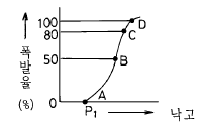
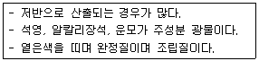
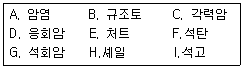
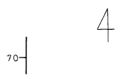

화약취급기능사 (2002-10-06 기출문제)
1과목: 화약 및 발파
1. Hg(ONC)2는 무엇인가?
- 흑색화약
- 피크린산
- 질화납
- 뇌홍
(정답률: 알수없음)

2. 화합 화약류중 질산 에스테르류에 속하는 화약류는 어느것인가?
- 흑색 화약
- ANFO 폭약
- 니트로 셀룰로오스
- 과염소산염 폭약
(정답률: 알수없음)
3. 다음중 제2종 도화선의 설명으로 맞는 것은?
- 연소시간은 1m당 150초이다.
- 선의 지름은 5㎜ 이상이다.
- 내수성은 수심 1m에서 2시간이다.
- 용도는 벌채용이다.
(정답률: 알수없음)
4. 다음 심빼기 발파에서 평행공 심발법에 해당하는 것은 어느 것인가?
- 노르웨이 심빼기
- 부채살 심빼기
- 코로만트 심빼기
- 피라미드 심빼기
(정답률: 알수없음)
5. 다음중 시가지에서의 가장 효과적인 발파법은?
- 집중발파
- 라인드릴링법
- 대발파
- 제발발파
(정답률: 알수없음)
6. 채석용적은 최소저항선의 몇 승에 비례하는가?
- 4승
- 5승
- 2승
- 3승
(정답률: 알수없음)
7. 전색물(메지)의 조건으로 적당하지 않는 것은?
- 연소되지 않는 것
- 단단하게 다져질 수 있는 것
- 불발이나 잔류폭약을 회수하기에 안전한 것
- 발파공벽과 마찰이 적은 것
(정답률: 알수없음)
8. 터널의 너비가 18m, 높이가 7.5m인 터널을 Smooth Blasting(스므스 블라스팅)을 실시하려고 한다. Decoupling(디카플링)지수를 1.6으로 하고, 천공지름을 45㎜로 하였을 때 적당한 폭약의 지름은 몇 ㎜인가?
- 17
- 22
- 25
- 28
(정답률: 알수없음)
9. 사면파괴가 일어나는 원인중 흙의 전단강도를 감소시키는 요인에 해당되는 것은?
- 건물, 물, 눈과 같은 외력의 작용
- 굴착에 의한 흙의 일부의 제거
- 지진, 폭파 등에 의한 진동
- 수분증가에 의한 점토의 팽창
(정답률: 알수없음)
10. 다음 사항중 용도에 의해 화약류를 분류할 때 폭파약에 속하는 것은?
- 무연화약, 흑색화약
- 다이너마이트, ANFO
- 테트릴, 헥소겐
- 풀민산수은(Ⅱ),아지화납
(정답률: 알수없음)
11. 폭발생성가스가 단열팽창을 할 때에 외부에 대해서 하는 일의 효과와 관련이 깊은 것은?
- 동적효과
- 정적효과
- 압축효과
- 팽창효과
(정답률: 알수없음)
12. 초유폭약(AN-FO)에 대한 설명 중 틀린 것은?
- 장전비중이 크면 기폭하기 어렵다.
- 연료유가 과대해지면 CO가스가 증가한다.
- 일반적으로 분상초안이 입상초안에 비하여 높은 폭속을 가진다.
- 초안은 흡습성이 강하지만 8% 정도의 흡습상태에서는 별 영향이 없다.
(정답률: 알수없음)
13. 군용폭약으로 사용되는 암모날(ammonal)의 배합 성분에 속하지 않는 것은?
- NH4NO3
- 알루미늄가루
- T.N.T
- 나뭇가루
(정답률: 알수없음)
14. 화약의 감도시험법이 아닌 것은?
- 낙추시험
- 가열시험
- 순폭시험
- 마찰시험
(정답률: 알수없음)
15. 흙의 비중 2.7이고 함수비가 35%, 공극비가 1.0일 때 포화도는?
- 75.5%
- 80.5%
- 92.5%
- 94.5%
(정답률: 알수없음)
16. 다음은 RQD를 설명한 것이다. RQD와 관계가 없는 것은?
- 암석의 질을 나타내는 지수이다.
- 암석의 강도를 나타내는 지수이다.
- RQD의 값은 암석의 역학적 결함이 적고 강도가 클수록 크다.
- RQD의 값은 풍화작용을 덜 받을수록 커진다.
(정답률: 알수없음)
17. 암석이 파괴되는 힘의 종류가 아닌 것은?
- 압축응력
- 전단응력
- 인장응력
- 마모응력
(정답률: 알수없음)
18. 갱내지압의 중요한 원인과 거리가 가장 먼 것은?
- 암반의 중량
- 암석의 탄성율
- 수분의 흡수
- 암석의 잠재력
(정답률: 알수없음)
19. 발파계원은 발파 위험구역안의 통행을 막기 위해서 경계원을 배치하고 경계원에게 확인 시켜야 할 사항이 있다. 적당하지 않은 것은?
- 발파방법
- 경계하는 위치
- 경계하는 구역
- 발파완료 후의 연락방법
(정답률: 알수없음)
20. 중심부에서 피라미드 심빼기 발파를 먼저하고 그 중심부에서 주위로 확대해 가면서 점화시키며 지하공동 굴착시과파쇄를 막기 위해 널리 사용되는 조절 발파법은?
- 라인드릴링방법(Line drilling method)
- 쿠션블라스팅법(Cushion blasting)
- 프리스프리팅법(Presplitting method)
- 스무드월블라스팅법(Smooth wall blasting)
(정답률: 알수없음)
2과목: 화약류 안전관리 관계 법규
21. 사면의 활동형상을 직선상태로 보는 것은?
- 원호사면
- 직립면
- 유한사면
- 무한사면
(정답률: 알수없음)
22. 전기뇌관 10개를 직렬 결선하여 16번 모선으로 100m 거리에서 발파할 때 필요전압(V)은? (단, 16번 모선의 지름 1.29㎜, 저항 0.013(을/m)이고, 뇌관 1개의 저항은 1.4Ω 이며, 발파기 내부저항은 10Ω, 발화전류는 1.2A 이다.)
- 30.36
- 31.92
- 42.75
- 45.36
(정답률: 알수없음)
23. 2자유면 발파로서 벤치커트를 실시하려고 한다. 천공간격을 최소 저항선과 같은 길이로 했을 때 장약량은 얼마인가 ? (단, 최소 저항선은 1.2m, 벤치의 높이는 1.5m, 발파 계수는 0.5이다.)
- 약 1.1㎏
- 약 7.1㎏
- 약 5.1㎏
- 약 3.1㎏
(정답률: 알수없음)
24. 흙중 간극이 차지한 부피와 흙 전체 부피의 비를 백분율로서 나타낸 값을 무엇이라 하는가?
- 간극율
- 부피율
- 함수율
- 포화율
(정답률: 70%)
25. 다음 낙추감도 곡선에서 시료가 완전폭발을 일으킬 수 있는 점은?

- A
- B
- C
- D
(정답률: 알수없음)
26. 2급 화약류저장소 설치 허가권자는 누구인가?
- 행정자치부장관
- 경찰서장
- 경찰청장
- 지방경찰청장
(정답률: 알수없음)
27. 화약류의 안정도시험을 한 사람은 그 결과를 누구에게 보고하여야 하는가?
- 행정자치부장관
- 경찰청장
- 지방경찰청장
- 관할경찰서장
(정답률: 알수없음)
28. 화약류를 갱내 또는 발파장소에 운반하고자 하는 때에는? (단, 초유폭약은 제외)
- 포장상자를 그대로 발파장소까지 운반하여 사용한다.
- 보조공이 하나씩 운반하여 사용한다.
- 배낭 그밖의 이와 비슷한 운반용기를 사용한다.
- 철재 상자를 사용한다.
(정답률: 알수없음)
29. 불이 날 위험이 있는 일광 건조장과 다른 시설간의 거리가 얼마 미만 인때에는 그 시설과의 사이에 간이흙둑을 설치해야 하는가 ? (단, 법령상 규정거리)
- 5m
- 10m
- 20m
- 30m
(정답률: 알수없음)
30. 전기발파의 기술상의 기준 중 올바르게 설명한 것은?
- 발파모선은 고무 등으로 절연된 전선 20m 이상의 것을 사용하되 사용전에 그 선이 끊어 졌는지 여부를 검사할 것
- 공기 장전기를 사용하여 폭약을 장전할 때에는 전기 뇌관을 반드시 천공된 구멍 입구에 두도록 할 것
- 동력선을 전원으로 사용할 때에는 전선에 0.5 암페어 정도의 적당한 전류가 흐르도록 할 것
- 도통 및 저항시험은 화약류를 장전한 안전한 장소에서 할 것
(정답률: 알수없음)
31. 1급 저장소에 폭약 25톤을 저장하고자 한다면 제1종 보안 물건과의 거리는 얼마이상 두어야 하는가?
- 550m
- 520m
- 470m
- 440m
(정답률: 알수없음)
32. 화약류 저장소에 따른 저장량이 맞는 것은?(단, 화약류의 종류는 화약이다.)
- 1급 저장소 100톤
- 2급 저장소 50톤
- 3급 저장소 25톤
- 수중저장소 400톤
(정답률: 알수없음)
33. 화약류 양수허가의 유효기간은?
- 6개월
- 1년
- 2년
- 3년
(정답률: 알수없음)
34. 화약류를 운반하는 사람이 화약류 운반 신고필증을 지니지 아니하였을 경우 처벌 내용으로 맞는 것은?
- 2년이하의 징역 또는 200만원 이하의 벌금
- 3년이하의 징역 또는 300만원 이하의 벌금
- 5년이하의 징역 또는 500만원 이하의 벌금
- 300만원 이하의 과태료
(정답률: 알수없음)
35. 공업뇌관 또는 전기뇌관을 운반신고 없이 운반할 수 있는 수량은?
- 100,000개
- 10,000개
- 1,000개
- 운반할 수 없음
(정답률: 알수없음)
36. 풍성쇄설암의 대표적인 것은?
- 응회암
- 황토
- 이암
- 셰일
(정답률: 알수없음)
37. 화성암의 반상조직에 있어서 반점모양의 큰 알갱이를 (a), 바탕을 (b)라 한다. a와 b로 옳은 것은? (순서대로 a, b)
- 절리, 엽리
- 반정, 석기
- 석기, 절리
- 행인상, 편리
(정답률: 알수없음)
38. 다음중 스카른광물(Skarn minerals)에 속하는 것은?
- 방해석
- 황철석
- 석류석
- 중정석
(정답률: 알수없음)
39. 아래의 조건에 해당되는 화성암은?

- 현무암
- 반려암
- 유문암
- 화강암
(정답률: 알수없음)
40. 화성암의 결정입자가 큰 원인은 무엇인가?
- 냉각 속도가 빠를 때
- 냉각 속도가 느릴 때
- MgO 성분이 많을 때
- SiO2 성분이 많을 때
(정답률: 알수없음)
3과목: 암석 및 지질
41. 다음중 변성정도가 가장 낮은 암석은?
- 편마암
- 슬레이트
- 천매암
- 편암
(정답률: 알수없음)
42. 육안으로 화성암의 종류와 그 이름을 알아내기 위한 방법으로 맞는 것은?
- 쇄설성조직, 층리, 화석을 관찰한다.
- 입상조직, 반상조직, 유리질조직을 관찰한다.
- 편리, 편마구조, 호온펠스 구조를 관찰한다.
- 쇄설성조직, 편마구조, 편리의 구조를 관찰한다.
(정답률: 알수없음)
43. Al2Si2O5(OH)4+5H2O → Al2O3· 3H2O +2H4SiO4위와 같은 화학적 작용은?
- 정장석이 고령토로 변하는 작용이다.
- 고령토가 보오크사이트로 변하는 작용이다.
- 흑운모가 갈철석으로 변하는 작용이다.
- 점토광물이 갈철석으로 변하는 작용이다.
(정답률: 알수없음)
44. 현무암이나 반려암보다 화강암이나 유문암에 많은 화학 성분은 무엇인가?
- CaO, MgO, Fe2O3
- K2O, Na2O, SiO2
- CaO, SiO2, MgO
- FeO, K2O, Na2O
(정답률: 알수없음)
45. 다음에서 화성암을 구성하는 유색광물이 아닌 것은?
- 감람석
- 휘석
- 각섬석
- 정장석
(정답률: 알수없음)
46. SiO2의 성분이 65∼60% 정도이고 화산암인 것은?
- 석영안산암
- 현무암
- 조면암
- 화강암
(정답률: 알수없음)
47. 암석의 붕괴를 촉진하는 물이 얼게 되면 부피가 얼마 정도 커지는가?
- 9%
- 15%
- 19%
- 25%
(정답률: 알수없음)
48. 퇴적암이 갖는 가장 특징적인 구조는 무엇인가?
- 엽리
- 편리
- 층리
- 석리
(정답률: 알수없음)
49. 지하수가 이동할 때에는 퇴적작용 보다 침식작용이 더 현저하게 일어난다. 그것은 지하수에 어느것이 들어있어 암석을 용해하기 때문인가?
- 이산화탄소(CO2)
- 이황화탄소(CS2)
- 이산화황(SO2)
- 이산화망간(MnO2)
(정답률: 알수없음)
50. 다음 보기에서 쇄설성 퇴적암만을 골라 올바르게 나열한 것은?

- A, E, I
- C, D, H
- B, F, G
- A, D, G
(정답률: 알수없음)
51. 변성암과 그 변성암에서 특징적으로 나타나는 변성구조와의 연결이 옳바르지 못한 것은?
- 편마암 - 편마구조
- 편암 - 편리구조
- 점판암 - 벽개구조
- 대리암 - 안구상구조
(정답률: 알수없음)
52. 파쇄작용을 받아 형성된 변성암만으로 짝지어진 것은?
- 안구상 편마암, 압쇄암
- 대리암, 규암
- 규암, 압쇄암
- 혼펠스, 천매암
(정답률: 알수없음)
53. 셰일이 접촉 변성작용에 의해 생성된 암석은?
- 호온펠스
- 규암
- 대리암
- 슬레이트
(정답률: 알수없음)
54. 우리나라에서 가장 맹위를 떨친 지각 변동은 어느 지층이 퇴적한 후인가?
- 결정편암계
- 평안계
- 조선계
- 대동계
(정답률: 알수없음)
55. 한 지점을 정점으로 해서 부풀어 오르거나 내려앉은 습곡으로 습곡축이나 습곡축면이 없으며, 평탄한 지표면에서 지층들이 둥근 모양으로 나타나는 습곡은 다음에서 어느것인가?
- 횡와습곡과 동형습곡
- 평행습곡과 침강습곡
- 배심습곡과 향심습곡
- 복배사와 복향사
(정답률: 알수없음)
56. 우리나라의 지형과 지질은 물론 지질구조에 있어서도 남과 북이 현저한 차이를 나타낸다. 이러한 차이는 어느 지역을 경계로 나타나는가?
- 태백산맥
- 추가령열곡
- 차령산맥
- 길주-명천지구대
(정답률: 알수없음)
57. 습곡의 단면에서 구부러진 모양의 정상부를 무엇이라 하는가?
- 윙
- 향사
- 배사
- 향사축
(정답률: 알수없음)
58. 우리나라는 지체구조로 보아 화북-한국대지(sino-koreanplatform)라 부르는 지역의 어디에 놓여 있는가?
- 북서부
- 북동부
- 남서부
- 남동부
(정답률: 알수없음)
59. 지질도에 그림과 같이 부호가 표기되어 있다. 주향과 경사는 얼마인가?

- NS, 70E
- NS, 70W
- EW, 70E
- EW, 70W
(정답률: 알수없음)
60. 화성암의 구조중 기공이 다른 광물질로 채워진 것과 가장 관련이 깊은 구조는?
- 포획암
- 다공상 구조
- 구과상 구조
- 행인상 구조
(정답률: 80%)